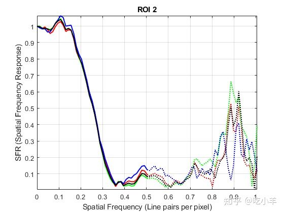

Home
本示例说明如何在Imatest ® 边缘空间频率响应 (eSFR) 测试图上执行标准质量测量。测量的属性包括锐度、色差、噪声、照度和颜色准确度。
创建测试图表对象
eSFR 图表的图像读入工作区。显示图表。
I = imread('eSFRTestImage.jpg');
figure
imshow(I)
title('Captured Image of eSFR Chart')
text(size(I,2),size(I,1)+15, ...
['Chart courtesy of Imatest',char(174)],'FontSize',10,'HorizontalAlignment','right');
创建一个 eSFR 测试图表对象，根据检测到的注册标记自动定义感兴趣区域 (ROI)。
chart = esfrChart(I);
突出显示并标记检测到的 ROI，以直观地确认 ROI 适合测量。
displayChart(chart)
所有 60 个倾斜边缘 ROI（以绿色标记）都是可见的，并以适当的边缘为中心。此外，20 个灰色补丁 ROI（以红色标记）和 16 个彩色补丁 ROI（以白色标记）是可见的，并且包含在每个补丁的边界内。图表已正确导入。
测量边缘锐度
测量所有 60 个倾斜边缘 ROI 的清晰度。还要测量这些 ROI 的平均水平和垂直清晰度。
[sharpnessTable,aggregateSharpnessTable] = measureSharpness(chart);
显示前四个 ROI 的 SFR 图。
plotSFR(sharpnessTable,'ROIIndex',1:4,'displayLegend',false,'displayTitle',true)

显示平均后的垂直和水平边缘的平均 SFR。平均的垂直 SFR 比平均水平 SFR 下降得更快。因此，平均垂直边缘不如平均水平边缘锐利。
plotSFR(aggregateSharpnessTable)
测量色差
测量所有倾斜边缘 ROI 的色差。
chTable = measureChromaticAberration(chart);
绘制第一个 ROI 中三个颜色通道的归一化强度分布图。为清楚起见，将归一化的边缘轮廓存储在单独的变量edgeProfile中。
roi_index = 1;
edgeProfile = chTable.normalizedEdgeProfile{roi_index};
figure
p = length(edgeProfile.normalizedEdgeProfile_R);
plot(1:p,edgeProfile.normalizedEdgeProfile_R,'r', ...
1:p,edgeProfile.normalizedEdgeProfile_G,'g', ...
1:p,edgeProfile.normalizedEdgeProfile_B,'b')
xlabel('Pixel')
ylabel('Normalized Intensity')
title(['ROI ' num2str(1) ' with Aberration ' num2str(chTable.aberration(1))])
颜色通道具有相似的归一化强度分布，并且沿边缘看不到太多色边。
测量噪声
使用 20 个灰色补丁 ROI 来测量噪声。
noiseTable = measureNoise(chart);
绘制每个灰度 ROI 中的平均原始信号和信噪比 (SNR)。
figure
subplot(1,2,1)
plot(noiseTable.ROI,noiseTable.MeanIntensity_R,'r', ...
noiseTable.ROI,noiseTable.MeanIntensity_G,'g', ...
noiseTable.ROI,noiseTable.MeanIntensity_B,'b')
title('Signal')
ylabel('Intensity')
xlabel('Gray ROI Number')
grid on
subplot(1,2,2)
plot(noiseTable.ROI,noiseTable.SNR_R,'r', ...
noiseTable.ROI,noiseTable.SNR_G,'g', ...
noiseTable.ROI,noiseTable.SNR_B,'b')
title('SNR')
ylabel('dB')
xlabel('Gray ROI Number')
grid on
估计光源
使用 20 个灰色补丁 ROI 估计场景照明。光源具有较强的蓝色成分和较弱的红色成分，这与测试图图像的蓝色色调一致。
illum = measureIlluminant(chart) illum = 1×3 110.9147 116.0008 123.2339
测量颜色准确度
使用 16 个色块 ROI 测量颜色准确度。
[colorTable,ccm] = measureColor(chart);
显示 ROI 的平均测量颜色和预期颜色。显示色彩准确度测量值，Delta_E。该Delta_E值越接近1，色差越不易察觉。Delta_E打印的典型值范围从 3 到 6，在其他商业应用中高达 20。
figure displayColorPatch(colorTable)
在色度图上绘制 CIE 1976 Lab颜色空间中的测量颜色和参考颜色。红色圆圈表示参考颜色。绿色圆圈表示每个色块的测量颜色。
figure plotChromaticity(colorTable)
您可以使用颜色校正矩阵ccm，对测试图表图像进行颜色校正。
参考文献
[1] Imatest®. "Esfr". https://www.imatest.com/mathworks/esfr/.
======================================================================
我的测试结果及程序
下面是我测试的代码：

注：本文根据MATLAB官网内容修改而成。